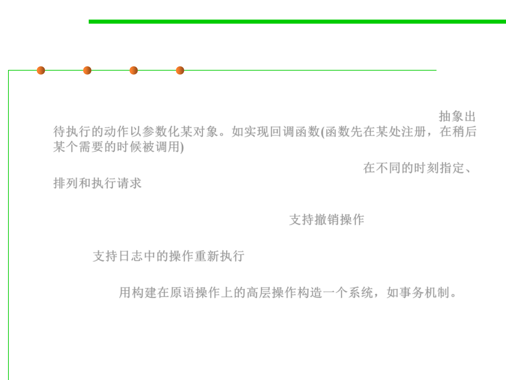

Command Pattern
6.2 Design Patterns for Maintainability
▪ Applicability
– Parameterize objects by an action to perform. E.g., callback function. 抽象出
待执行的动作以参数化某对象。如实现回调函数(函数先在某处注册，在稍后
某个需要的时候被调用)
– Specify, queue, and execute requests at different times. 在不同的时刻指定、
排列和执行请求
– Support undo. The Command‘s Execute operation can store state for
reversing its effects in the command itself 支持撤销操作
– Support logging changes so that they can be reapplied in case of a system
crash. 支持日志中的操作重新执行
– Structure a system around high-level operations built on primitives
operations. 用构建在原语操作上的高层操作构造一个系统，如事务机制。